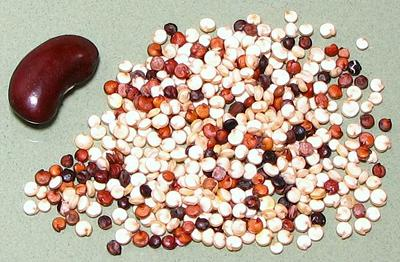

Quinoa Seeds

[(from Quechua "kinwa"); Chenopodium quinoa]
Pronounced "keenwa", this plant is native to the Andean region of
South America. It is grown mostly in Peru, Bolivia, and Chile, but some
production has been started in North America because of its reputation
as a health food. While the greens are edible, they are rarely
available and the seeds, which are very similar to related
Amaranth Seeds, are the part
generally used. There are many varieties with differences in coloration,
including seed coloration. Most sold in North America is white, but the
tricolor in the photo is also sold here. The white dominates in Chile.
Quinoa seeds are tiny, as seen in the photo comparing them to our
standard red kidney bean, but the plant is a prolific producer. As
harvested, the seeds are coated with bitter saponins making them
inedible. A couple of soakings and rinsings in water are needed to
remove the bitterness. Quinoa sold boxed or bagged in the North
America has generally already been processed to remove saponins.
High yield low saponin varieties were developed. They were not
successful because birds ate the entire crop before it could be
harvested.
More on Amaranth Family.
Buying:
Quinoa seeds are the darling of Yuppies and "health
food" enthusiasts (2022), so it is currently very easy to find, at least
in Southern Calfornia. Markets that carry the Bob's Red Mill line of
products are sure to have it.
Storing:
Seeds should be kept in a tightly sealed jar,
away from light and as cool as possible. Under these conditions it will
keep for about a year. Once ground into flour it is highly perishable and
should be kept refrigerated and only for a few days - preferably grind as
needed.
Cooking:
Quinoa Seeds are usually simmered in water with a
little salt until the seeds are soft and most have burst. It is then ready
to eat as a "cereal", used to make salads, or mixed with meats and/or
vegetables as rice might be.
Health & Nutrition:
Quinoa is high in protein
(12% to 18%) but its most outstanding feature is that the protein is
nearly completely balanced for human needs. Wheat, rice and corn must
be accompanied by beans to balance the protein content but quinoa can
stand alone. Quinoa is also gluten free for people with a gluten
intolerance, or subject to fad diets.
ch_quinoz 190306 - www.clovegarden.com
©Andrew Grygus - agryg@clovegarden.com - Photos
on this page not otherwise credited © cg1
- Linking to and non-commercial use of this page permitted